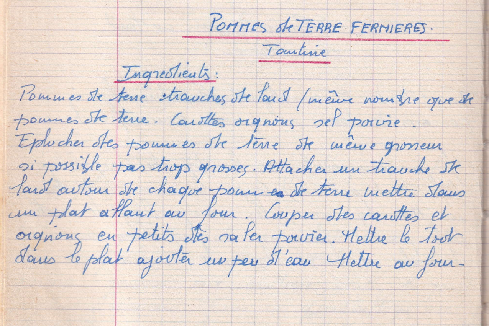

Pommes de terre fermières
Tantine

LISTE DES INGREDIENTS
- Pommes de terre
- Tranches de lard / même nombre que de pommes de terre
- Carottes
- Oignons
- Sel et poivre
PREPARATION
- Eplucher des pommes de terre de même grosseur si possible pas trop grosses
- Attacher une tranche de lard autour de chaque pomme de terre
- Mettre dans un plat allant au four
- Couper des carottes et oignons en petit dés
- Saler poivrer
- Mettre le tout dans un plat, ajouter un peu d'eau
- Mettre au four